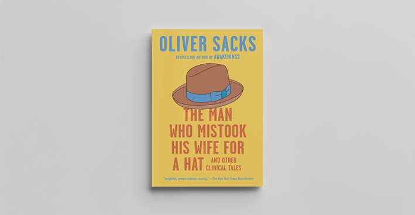
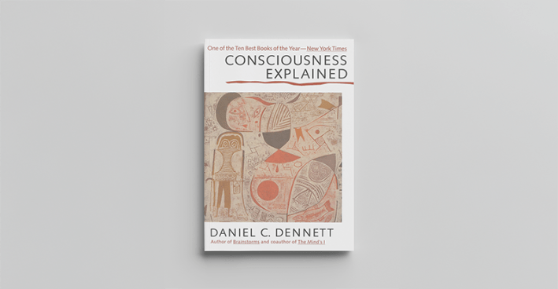
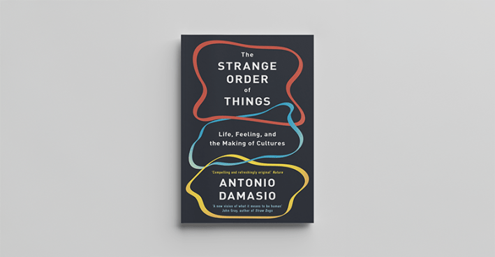
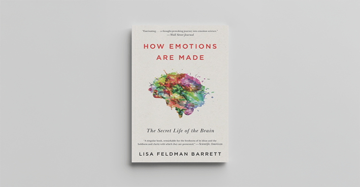
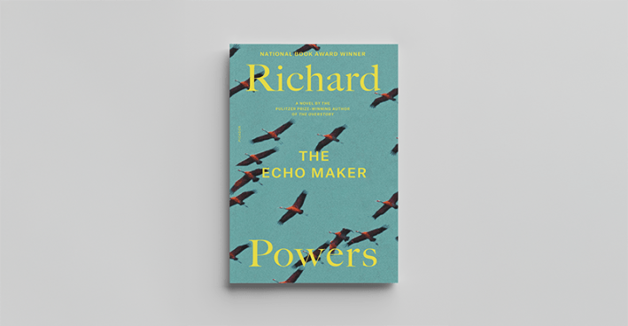
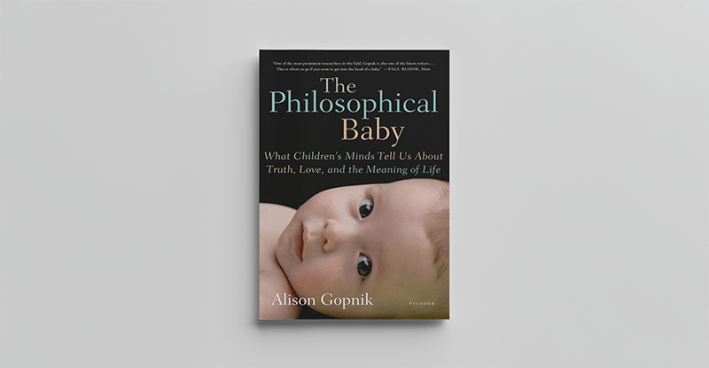
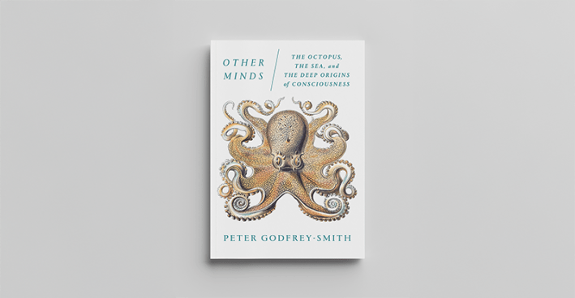
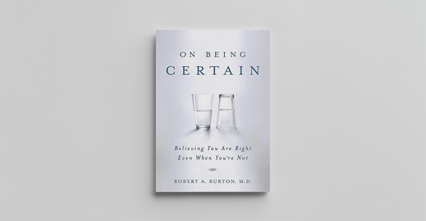
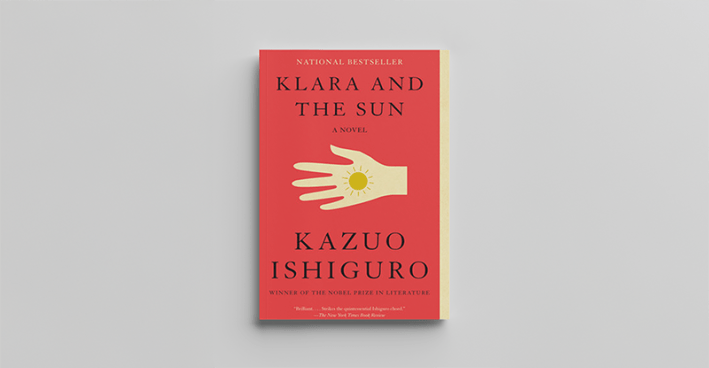
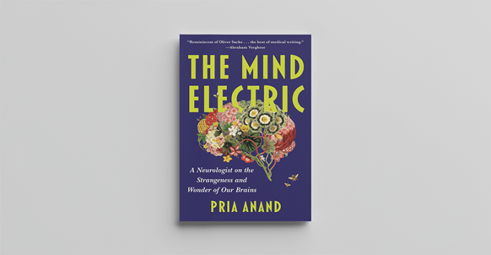

Poet Emily Dickinson's famous line that the brain is wider than the sky captures the 10 books featured here. They are more than manuals to axons, dendrites, synapses, and neurotransmitters. They take us inside the brain to show us how it intersects with the world outside it. These books, fiction and nonfiction alike, remind us that stories shape how we learn and remember. Of course, they represent only a fraction of literature on the brain. We chose them because they evoke themes we love to cover in Nautilus—brain evolution, consciousness, creativity, animal intelligence—and because they are beautifully composed and written. The brains behind them have a touch of the poet themselves.

Penguin Random House
The brain was an organ in our heads that only specialists understood until British neurologist Sacks appeared in the 1980s to fascinate us all with case histories of his patients with brain disorders like visual agnosia and Tourette's Syndrome. Damaged parts of the brain and the strange behaviors they induced informed neurology and led to a better understanding of the brain. Sacks' talent at weaving neurology into stories of people like a music teacher who can't properly contextualize things—one day he reaches for his hat to leave Sacks' office but grabs his wife's head instead—remains nonpareil. In writing about brain disorders, Sacks widened our understanding of being human.

Hachette Book Group
The late philosopher's 1991 book is the maypole around which debates about consciousness revolve. Dennett didn't buy that consciousness emerged from a mysterious theater of the mind. That consciousness was a "hard problem" or an essence of the universe. He maintained that consciousness, that qualia—the redness feeling of red—could be traced to the material brain. Consciousness and all varieties of thought or mental activity "are accomplished in the brain by parallel, multitrack processes of interpretation and elaboration of sensory inputs," he wrote. To this day, philosophers of the mind must reckon with Dennett and his illustrious body of work.

Hachette UK Limited
The eminent neuroscientist at the University of Southern California explains that the brain is not the director in the movie of our lives but is influenced by the actors in the body itself. The biological interplay, in which the body strives to maintain a healthy homeostasis, gives rise to feelings that are the real heroes in our prosperity as a species. Descartes had it wrong. His famous dictum should be, I feel, therefore I am. "Feelings have not been given the credit they deserve," Damasio writes. It's feelings that gave rise to science, medicine, religion, and art.

HarperCollins Publishers
Neuroscientist Barrett makes a compelling case that emotions are not an innate circuit in our brain triggered by experiences. Rather, they are concepts that our individual brains fashion, with threads of memory, to make sense of current situations. "From sensory input and past experience, your brain constructs meaning and prescribes action," Barrett writes. "With concepts, your brain makes meaning of sensation, and sometimes that meaning is emotion.” For the other side of the argument, that emotions are universally innate, read the equally compelling Awe by Dacher Keltner, a professor of psychology at the University of California, Berkeley.

Macmillan Publishers
Powers won the 2006 National Book Award for this novel that explores Capgras syndrome, a rare form of brain damage that cuts off perception from emotional connection. The novel's main character survives a car crash but doesn't recognize his sister who lovingly cares for him. He treats her as a kind stranger. The Echo Maker, named after a Native American term for sandhill cranes, unreels as a metaphor for what happens when our deepest feelings for others and our environment become severed from our supposedly rational minds. Powers amplified that theme in his hugely popular novel, The Overstory.

Macmillan Publishers
The vivid writing alone by the University of California, Berkeley, professor of psychology distinguishes her groundbreaking appreciation of the kid brain and how it experiences the world more colorfully than adult gray matter. Children and adults, Gopnik writes, "are different forms of Homo sapiens." Children have "equally complex and powerful minds, brains, and forms of consciousness, designed to serve different evolutionary functions." Such as? "Children are the R&D department of the human species—the blue-sky guys, the brainstormers. Adults are production and marketing. They make the discoveries, we implement them."

Macmillan Publishers
Other Minds is incredible because Godfrey-Smith convinces us that cephalopods like the octopus have active minds, subjective experiences, and their own consciousness. Octopuses are exploratory and curious, always seeking novelty, Godfrey-Smith tells us. "These features are reminiscent of what Stanislas Dehaene associates with consciousness in human mental life." (Cognitive scientist Dehaene's book Consciousness and the Brain could also be on this list.) The invertebrate octopus developed along an evolutionary path wholly apart from us vertebrate primates, Godfrey-Smith informs us, and so is "probably the closest we will come to meeting an intelligent alien."

Macmillan Publishers
Neurologist Burton probes the question: What does it mean to be convinced? His answer: "Despite how certainty feels, it is neither a conscious choice nor even a thought process." It arises "out of involuntary brain mechanisms that, like love or anger, function independently of reason." This "feeling of knowing" guides both humanity's wonders and follies. On Being Certain is alive with stories from science and art, politics and law, to reveal that if there is one thing about which we can be certain it's that certainty is a story written by our brains—an awareness that Burton writes could lead to a humbler, wiser world.

Penguin Random House
What's so extraordinary about the Nobel laureate's eighth novel is the voice of its narrator, Klara, an Artificial Friend, a humanoid robot. Klara's observations of people and the environment, especially the sun, which the solar-powered Klara calls "he," are innocent and unaffected; you feel Klara learning, becoming more conscious, although you never forget Klara's a machine. Anil Seth, a professor of cognitive and computational neuroscience, who probed the nature of consciousness in his book, Being You, calls Klara and the Sun an "emotionally devastating fictional account of what AI consciousness might be like, if it were conscious—and, more so, a reflection back onto how we understand our own selves and our own conscious minds."

Simon & Schuster
The Mind Electric, published earlier this year, is a revelation. It's the first book by Anand, an assistant professor of neurology at the Boston University School of Medicine and a neurologist at the Boston Medical Center. She weaves her experiences with patients afflicted with a strange and awful array of brain disorders—“The student lost her vision so gradually, so insidiously, that not until days after the symptoms first began did she realize that she had been struck blind"—with her own family history, fables, medical history, and literature. Anand writes, "The human desire for narrative, the impulse to tell and hear stories, is both universal and inexorable, coded into our brains so deeply across multiple networks that it often survives and even surges after the most devastating of brain injuries." That transcendence shines through The Mind Electric. 
Lead image: Solarisys / Shutterstock
Källförteckning
- Originalartikel: https://nautil.us/the-nautilus-reading-list-about-the-brain-1234285/